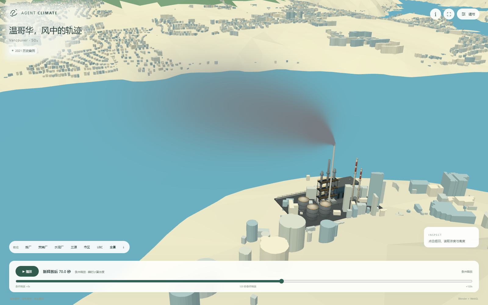

白底地形与固定镜头
粗地形、工业图标和地表浓度／粗等值面；以对比参考帧为主。
VANCOUVER · SO₂ · RESEARCH NOTES
从风场、排放到三维烟羽。
逐步说明模型，也完整保留未通过的结果。
本次首版采用连续360小时结果。 不把120秒演示循环、拉长或拼接成15天。360个连续小时平均场以15秒播放；源、初始背景和沉降分别保留。
查看验证记录 ↓01 / METHOD
含展开式方程、符号和单位。
历史案例、近源演示与新15天版分开说明。
历史天气由同次GFS 2021-12-26 18 UTC预报驱动，模拟72小时。SO₂原始小时报告来自ECCC NAPS：17站固定分为12训练站与5留出站，分别574与238条有效报告；零值保留、缺测不填零。两种方案使用同一批观测交集。
源位置、排放年量、物理配置和误差门在留出评价前冻结。这是使用同期训练观测的历史空间留出重建，不是未来盲测。
历史WRF采用9 / 3 / 1 km嵌套网格、18 / 6 / 2秒时间步，推进动量、热力和水物质，并耦合辐射、云微物理、边界层与陆面过程。真实Times、三维U/V/W、温压和降水被保存后适配到输送模型。
地面气象站只观测地面附近。网页近源“观测约束”模式用有效站逐小时风矢量修正源柱的模拟风，保留WRF垂直切变；不能称作实测三维风场或平衡资料同化。
历史年库存按全年均匀排放换算kg/s，设施归为五组。普通栈利用烟囱高度、温差、出口速度与模拟源柱风计算Briggs最终浮升代理；未核几何使用明确标注的screening先验，不能当作现场测量。
网页近源视图另做三设施、72气象工况、两种天气输入，共432组条件计算：每0.25秒释放Gaussian质量核，在当前高度风中推进，采用Briggs渐进浮升和Hanna / OU三维扩散。每次从0连续释放120秒，未解析喷流、建筑尾流或完整热对流CFD。
区域模型在随时空变化的WRF风场中推进粒子，以诊断湍流描述未解析混合；干、湿清除减少粒子所携带质量。新增高度诊断实际输出16个层顶，从20至10,000 m AGL；真实粒子路径按slot＋release＋birth身份连接。
历史接口采用SFC0诊断湍流，不能称直接使用WRF全部HFX / UST / PBLH。SO₂氧化、雪冰清除和外部化学背景存在近似或缺口；区域沉降输出本身不证明包含出流后的全球质量闭合。
近源湿清除使用液当量降水经验式 λ = 2×10⁻⁵ P0.62 s⁻¹，P为mm/h。本历史窗口最近有效雨站报告为0.0 mm，观测模式没有人为造雨；WRF模式源点最高约0.1014 mm/h。120秒演示不能展示15天的降雨沉积。
A：年库存乘子固定为1，只拟合非负常数背景。G：用相同12训练站拟合五个常数源组系数和背景；正则化由整站留一交叉验证选择，λ=0.01。固定预测后才评分5个留出站。
系数是本次模型假设下的条件估计，不是真实逐小时排放。地图显示源贡献，评分预测包含拟合背景，两者不能混称总环境浓度。网页外观第一版与年库存基线A是不同概念。
| 源组 | 条件乘子 | 名义年量 t |
|---|
区域体积读取16层浓度；相邻时刻在浓度、位置或轨迹层面插值，再绘制当前场景。近源Gaussian核按视线积分求浓度并映射透明度。SO₂本身无色，灰色和自选颜色只用于显示，不是黑烟的光学预测。
地表查询读取真实原生0–20 m层并按经纬网格采样，范围外返回空值。近源查询则为局部平地0–20 m模型求积，二者在界面中区分。NRCan建筑轮廓与简化高度、地形显示×1.8仅用于景观，不让气象自动获得逐栋建筑分辨率。
02 / HISTORICAL RESULTS
2021年案例 · 原始离散站小时报告
RMSE越低越好，单位ppb
| 分组 | 方案 | 报告 / 站 | RMSE | MAE | Bias |
|---|
实测报告与两种方案，同一UTC时刻
| NAPS站 / 地点 | 报告 | A RMSE | G RMSE | 变化 |
|---|
| 机场 | 温度报告 n | 温度RMSE K | 温度Bias K | 风矢量报告 n | 风矢量RMSE m/s |
|---|
两机场温度偏差方向相反。地面风核验不能验证整个高空烟羽；报告在原始UTC最近±30分钟内匹配，重复报告只计一次。
| 设施 | 年SO₂ t | 栈高 m | 口径 m | 出口速度 m/s | 出口温度 K | 名义率 kg/s |
|---|
WTE为三烟道合并年量、按单烟道参数计算浮力，采用2017运行情景／2020报告热参数先验。FCC与水泥厂也并非逐时测绘或运行记录。这里的2021案例参数与新15天试验的2024年库存不同，未混用。
查询一致性检查：网页地表取值 ppb，与独立原场插值绝对差 ppb。证明实现一致，不证明现实预测准确。
实际算时：原WRF积分30,042.66秒；修正输出后的原SO₂输送780.26秒；新增16层三维诊断6,361.63秒。这是不同任务的程序单调时钟计时，不能当作CPU时间或单次总耗时。
03 / FROM THE FIRST VERSION
展示、物理与精度分开说明。
更完整的画面不等于更小的现实误差。

粗地形、工业图标和地表浓度／粗等值面；以对比参考帧为主。
增加储罐、管廊、平台；依据高程、海岸线及可用建筑资料重建整体景观。
约29.5万栋建筑、四个简化地标；新增16层实际浓度诊断、粒子身份路径与自由视角。
独立近源渐进浮升扩散、三设施、灰色／自选色、默认15秒可调播放；UBC贴地校徽，取消地标文字牌。
几何从约408 MB压缩到49.8 MB，保留295,252栋建筑；地表点击、手机适配、精简设置和本计算子页面。
| 改进 | 实际作用 | 不能推导出的结论 |
|---|---|---|
| 建筑／地标细化 | 提高空间辨识度，可自由查看 | 没有自动解析逐栋建筑尾流 |
| 4层粗显示 → 16层诊断 | 增加真实垂直输出层次 | 没有提高原天气网格分辨率 |
| 干沉降导出索引 INT → FLOOR | 修复西／南输出边界负权重，保留失败后用同输入重新生成 | 未调整源强、物理损失或评分门来追分 |
| 近源渐进浮升＋扩散 | 单独计算烟囱到下风向的三维条件响应 | 120秒结果不能冒充15天 |
| 标量／位置插值与同步提交 | 修复跨时刻闪回；连续更新当前场景 | 不使用RGB叠帧、交叉淡化或残影平滑 |
| GPU源码局部修复 | 同输入原生算子证明了W缩放与冻结条件差异 | 局部通过不等于完整24小时或15天通过 |
04 / THE 15-DAY EXPERIMENT
冻结起报 2026-11-04 18:00 UTC，目标结束 2026-11-19 18:00 UTC。以真实连续天气状态驱动持续排放、三维输送与干湿沉降，再把整段360小时映射为15秒播放。
本次使用GFS前360小时连续预报；这是15天预报情景，不是未来实测。原30天计划中的CFS后段未用于本次首版。
合格气象
361时次 × 2域连续污染输送
360小时 · 质量收支查询与播放
地表／3D／沉降／15秒等待完整评分快照。
新天气使用获准的Noah-MP配置。GPU为独立JAX版WRF兼容实现；私有修复分支明确标注。FLEXPART输送仍为CPU并行，未宣称全链GPU。
| 气象网格／步长 | 9 / 3 km两域，18 / 6秒，50个大气层 |
|---|---|
| 主要物理配置 | Thompson 8云微物理、RRTMG 4辐射、YSU 1边界层、Noah-MP 4陆面；GF积云外域3／子域0 |
| 初始化与边界 | 冻结GFS 2026110418起报；本次GFS 0–360h，真实连续状态接续，不每日清零 |
| 源与背景计划 | 三源实际位置、已核2024年量；350,000个NASA初始背景粒子，未来新增500,000粒子；不是实时排放／实测背景 |
| 输送计划 | CPU 8线程；16层输出顶20–10,000 m；连续360h，粒子年龄上限1,296,060秒，避免11.6天截断 |
| 验收与产品 | 361气象时次×两域；360h污染Times完整、有限非负、ZERO精确0；沉降／出流质量预算后才生成15天均值和交互数据 |
这里列出已冻结的计划与接口，各步骤实际完成状态见本页结果快照。Briggs终高释放不是已解析的热烟羽CFD；湍流采用合格TURB1 / SFC0路径，云量4D接口单独验证，雪冰和氧化仍有局限。
GPU 对固定CPU参考 · d02累计RAINNC · RMSE / mm
| 版本 | 源码变化／分支关系 | d01 | d02 | 原完整门 |
|---|
| 版本 | 域 | 变量 | 小时 | 指标 | 实际值 | 原上限 |
|---|
| 候选 | QCLOUD | QRAIN | QICE | QSNOW | QGRAUP |
|---|
这些是天气水凝物的微小负迹，保留原数值与记录；不等于SO₂结果允许负浓度。污染非负、ZERO和质量门保持严格。
实际8→9小时中性观察两域各377字段逐值一致。相同真实输入下，原生干边界算子与GPU的W贡献相对差约3.205%；源码链中发现多除一次msfty。
单处修复后，三次实际调用相对RMS降至约3×10⁻⁸，另39输出逐字节相同。然而24小时雨RMSE只下降约0.22%，完整门仍未通过。
实际10小时＋6秒的14,400×50层输入：原生fallback要求rc>R1，原GPU漏掉这项。360,000点中原条件11处不符，补齐后0处不符。
云冰也改善；单步当步降水不变。它证明局部条件遗漏，不证明整段降雨偏差已解决。
微负天气水凝物保留原值，不截零、不裁mask、不修改原1 mm阈值，也不选择更有利的CPU参考。原始失败与私有候选分别保留。W＋云水分支不叠加先前初始化／地表改动。
新15天源强采用已核实2024年年度资料与明确年代的热参数先验；初始SO₂来自NASA模型场，非三维实测，后续域外化学入流仍有缺口。没有把源增量称为完整环境总浓度。
05 / DATA & SOURCES
页面为带时间戳的静态快照，非实时看板。
下载保留原精度，显示值作适度四舍五入。
单位：ppb为摩尔体积分数十亿分之一；ng/m³÷1000为µg/m³；累计沉降原数值ng/m²÷10¹²为kg/m²，不重复累加累计快照。RMSE = √mean((预测−参照)²)。近源／区域与CPU一致性试验使用不同参照，不能横向混作同一种精度分数。